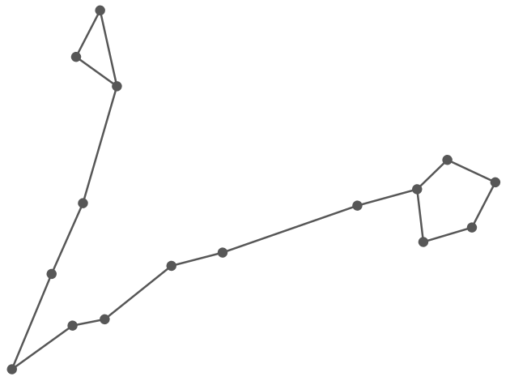

Star Constellation for Pisces
Element: Water
Pisces Symbol

Describing a Pisces’ personality can be difficult because Pisces tend to evade distinction. Their behavior changes significantly based on who they’re around. Pisces are just permeable membranes that pensively let things flow through them. They are cerebral sea sponges. They are boundless. They tend to dilute themselves with larger personalities to avoid having to form coherent identities.
Most of the qualities usually associated with Pisces (dreaminess, emotionality, imagination) are internal processes that are difficult to observe from the outside. This is because Pisces are primarily inward-facing. They are not self-absorbed, but they are absorbed in themselves.
Ultimately, a Pisces wants to dissolve. To wrest themselves of a physical form and diffuse into everything they touch as love. To exist in the gossamer liminal layer that hangs just barely above the material. To live their life like a romantic poem. To understand that reality and fantasy are neighbors on the same infinite plane.
Complimentary Signs to Pisces: